1. АНАЛИЗ ЭЛЕКТРИЧЕСКОЙ ЦЕПИ ВО ВРЕМЕННОЙ ОБЛАСТИ
Задача анализа цепи во временной области заключается в определении её реакции (сигнала у(t) на выходе) на заданное входное воздействие х(t). Свойства линейной цепи во временной области оценивают по её переходной h(t) или импульсной функции g(t). По виду переходной и импульсной функций оценивают динамические свойства цепи и определяют степень искажения сигналов, проходящих через цепь.
Переходная функция h(t) - это реакция цепи на единичный скачок 1(t) напряжения (тока) на её входе при отсутствии начального запаса энергии в цепи, т. е. при нулевых начальных условиях (ННУ). Функция h(t) определяется только структурой схемы и параметрами элементов цепи и может быть получена как экспериментально, так и расчётом.
При экспериментальном способе получения функции h(t) на вход цепи подают скачок напряжения x(t) = 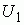·1(t) (либо x(t) = 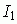·1(t)) и осциллографируют реакцию y(t) на выходе цепи (рис. 17.1).
Для получения переходной функции реакцию y(t) нормируют относительно уровня
 (либо
(либо
 ) входного воздействия:
) входного воздействия:
h(t) = y(t) / (либо h(t) = y(t) /
(либо h(t) = y(t) / ).
).
При x(t) = 1(t) реакция y(t) цепи количественно совпадает с соответствующей переходной функцией h(t).
Различают следующие виды переходной функции: hи(t) =
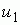(t)/ - переходная функция по напряжению;
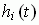 =
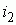(t)/
- переходная функция по напряжению;
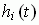 =
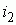(t)/ - переходная функция по току;
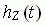=
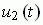/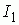- переходное сопротивление и
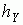(t) =
- переходная функция по току;
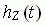=
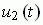/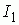- переходное сопротивление и
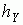(t) =
 (t)/
(t)/ - переходная проводимость, где
- переходная проводимость, где
 и
и
 - амплитуды (уровни) входного сигнала.
- амплитуды (уровни) входного сигнала.
Расчёт переходной функции h(t) обычно проводят с использованием передаточной функции цепи H(p)= Y(p)/X(p). При этом переходная функция h(t) равна обратному преобразованию Лапласа передаточной функции цепи, умноженной на изображение единичного скачка (1/p), т. е.
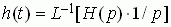,
где Y(p) и X(p) – изображения (по Лапласу) реакции y(t) цепи и входного воздействия – единичной ступенчатой функции 1(t).
Получив переходную функцию, например hи(t) (рис. 17.2), оценивают динамические свойства цепи (системы) по следующим количественным критериям:
- время переходного процесса tпп (т. е. быстродействие системы), которая определяется промежутком времени от момента приложения воздействия до момента (точка А), когда абсолютная величина разности между реакцией и установившимся значением (u2 – u2у) становится во все последующие моменты времени меньше заданной величины, обычно равной 5% от установившегося значения u2у;

- перерегулирование (σ %), служащее мерой колебательности процесса при α < ω0:
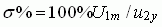.
Допустимое значение перерегулирования чаще всего находится в пределах от 0 до 25%. Обычно требуется, чтобы за время переходного процесса tпп число колебаний 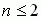;
- фронт нарастания tф реакции, определяемый интервалом времени между значениями реакции от 0,1 до 0,9 от установившегося значения u2у;
- время запаздывания tз нарастания реакции, определяемый от момента приложения воздействия до момента (точка Б, см. рис. 17.2), когда абсолютная величина реакции достигает половины установившегося значения (u2 = 0,5u2у).
Импульсная функция g(t) - это реакция цепи на входное воздействие в виде 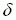-функции (u1(t) = 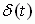, см. рис. 17.1) при нулевых начальных условиях. Пока длится импульсное воздействие, а это время, по предположению, бесконечно мало, в реактивных элементах L и C цепи запасается некоторая энергия. После прекращения воздействия в цепи возникают свободные колебания, которые и являются реакцией на импульсное воздействие. По характеру и длительности затухания свободных колебаний оценивают спроектированное устройство.
Один из способов определения импульсной функции g(t) заключается в следующем. Сначала находят реакцию (переходную функцию h(t)) цепи на единичное ступенчатое воздействие, а затем ее дифференцируют:
g(t) = dh(t)/dt при h(0) = 0 (или при t > tи, tи→ 0);
g(t) = h(0) (t) + dh(t)/dt при h(0)
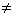0.
(t) + dh(t)/dt при h(0)
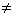0.
Импульсная функция g(t) цепи может быть также найдена как обратное преобразование Лапласа передаточной функции H(p) цепи, т. е.
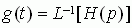.
Для реализации воздействия в виде δ-функции выбирают импульс большой амплитуды, например, видеоимпульс 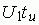 (либо 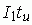) прямоугольной формы, экспоненциальный импульс 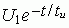 и др., но с очень малым временем tи по сравнению с постоянной времени 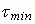 цепи. Импульс считается "коротким", если его длительность будет значительно меньше периода Тсв собственных затухающих колебаний в цепи.
Если площадь импульсного воздействия равна единице, например, 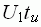 = 1 В∙с (либо 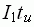 = 1 А∙с), то реакция цепи количественно совпадает с соответствующей импульсной функцией цепи, т. е. y(t) = g(t). Если же площадь импульсного воздействии не равна единице, например, 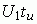 ≠ 1 В∙с (либо 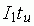≠1 А∙с), то пропорционально изменяется и реакция y(t) цепи, поскольку в данной работе исследуются линейные цепи. Для получения импульсной функции g(t) (в 1/c) осуществляют нормирование реакции относительно площади импульсного воздействия, т. е.
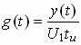 или 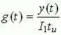.